第 1 題｜商業登記證：行政機關對人民作成的行政處分
題意：服飾店依《商業登記法》申請商業登記，主管機關審核後核發商業登記證。問這種行政機關對人民的行為是什麼？
容易錯在看到「依法律規定」就以為是「行政責任」。但行政責任是人民違法後要承擔的後果；本題沒有違法受罰，而是行政機關做成一個對外發生法律效果的決定。
補救句：看到「主管機關核准、許可、登記、撤銷、吊銷」先想行政處分；看到「不服」才想行政救濟。
本頁依兩張已批改考卷照片整理。每題保留錯題截圖，並針對每一個選項說明「為什麼對／為什麼錯」，最後附加強練習，讓學生練習把題目情境判斷成行政處分、行政罰、行政救濟、民事責任或刑事責任。
題意：服飾店依《商業登記法》申請商業登記，主管機關審核後核發商業登記證。問這種行政機關對人民的行為是什麼？
題意：未依規定掛牌／違反道路交通管理規定，被處新臺幣 1,200 元以上至 6,000 元以下罰鍰。問此處罰與哪一類處罰性質相同？
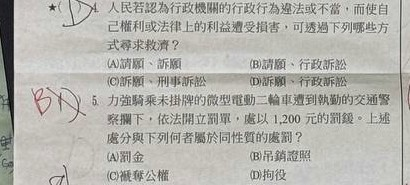
題意：對「行政機關的決定」不服，想救濟自己的權益。題目用流程圖呈現「提出訴願、訴願決定、行政訴訟」等節點，問哪個說明錯誤。
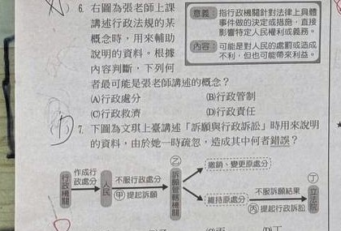
題意：表格列出多種裁罰，問哪一組都屬於行政罰。此題照片無法百分之百確認教師答案，先用「課本常見分類」訂正。
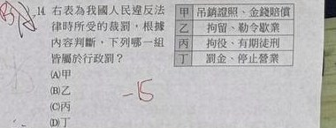
題意：稅捐機關核定贈與稅／罰鍰，人民若不服該處分，應尋求何種救濟？
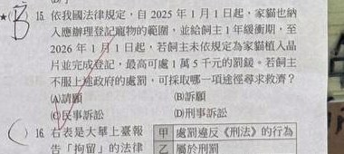
題意：交通事故造成違規罰鍰、他人損害、醫療或殯葬費等費用，問「行政責任」的費用是多少。
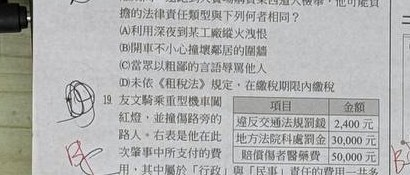
題意：比較「罰金」與「罰鍰」的制裁性質、目的、裁罰機關與是否留下刑事紀錄，問哪一欄資料錯誤。
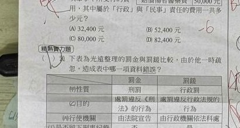
題意：在不公開或公開社群中辱罵同學、造成名譽受損，問可能負什麼法律責任。
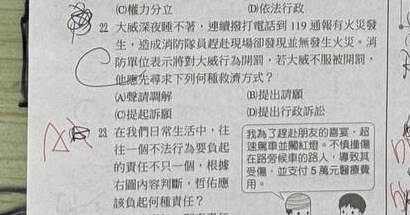
題意：《都市更新／徵收》相關規定要求公告、說明、社會影響評估，並讓人民表達意見。問這主要表達什麼意涵。
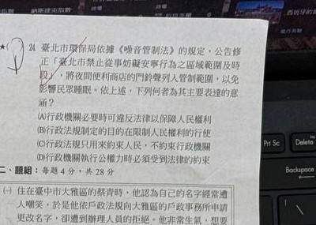
題意：居民對捷運站命名向政府請願，政府拒絕。問這個事件屬於哪一類法律範圍。
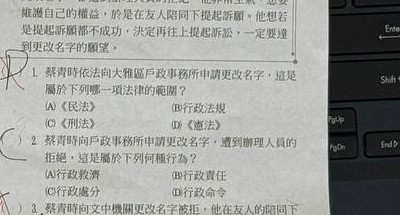
題意：對行政機關拒絕改名、訴願仍不成功，若要提起訴訟，應向哪個機關？
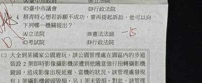
題意：題組提到國家公園／觀光發展與主管機關管理，問下列哪一項法律與其同性質。
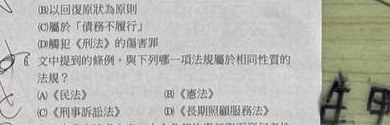
題意：法院判決或主管機關要求人民配合公共建設／遷離，問哪個情境的法律效果相同或最接近。
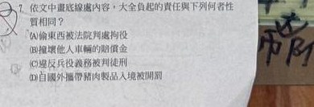
每題點一個答案，系統會立刻顯示解析。練習目標不是背選項，而是把題目情境分類。